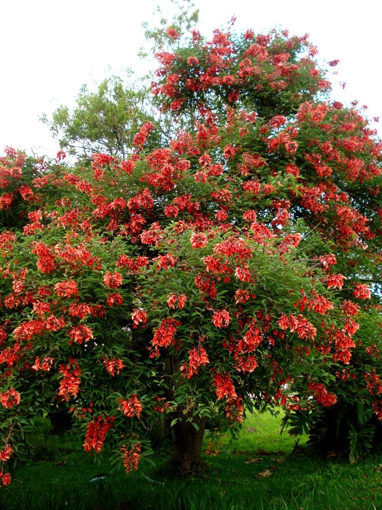
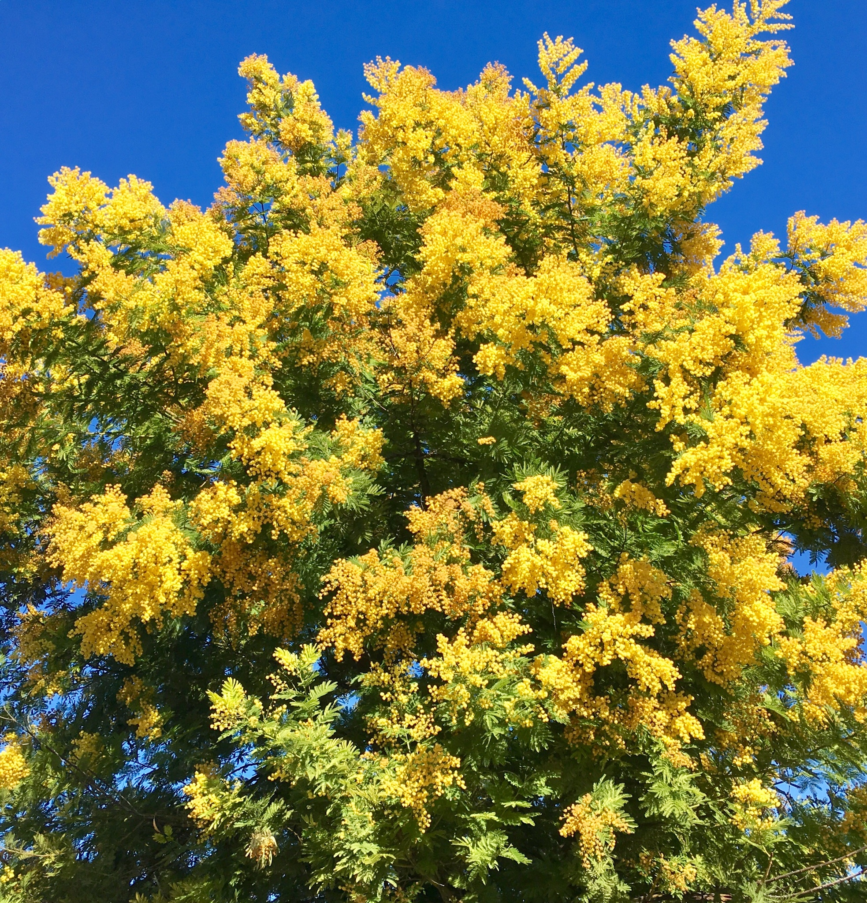
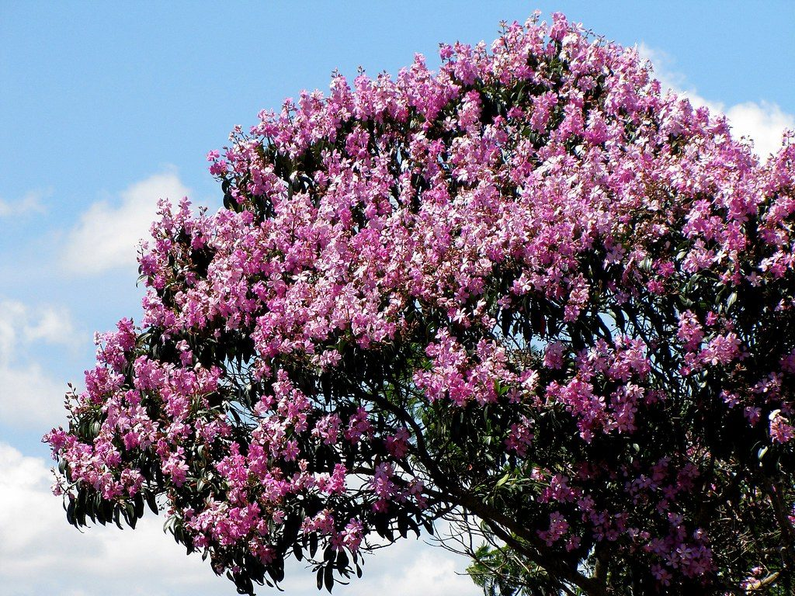
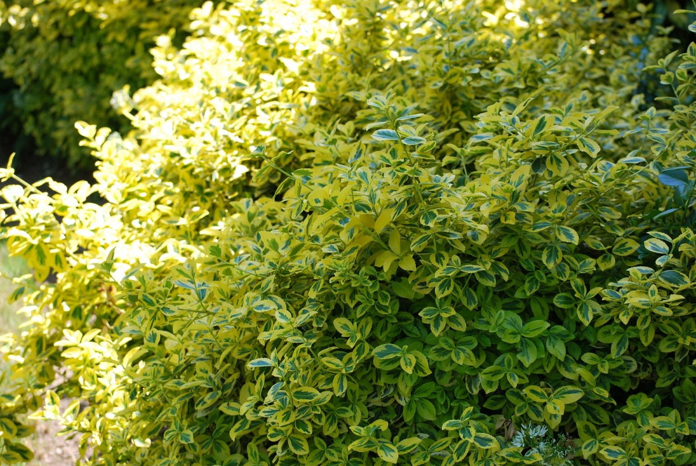
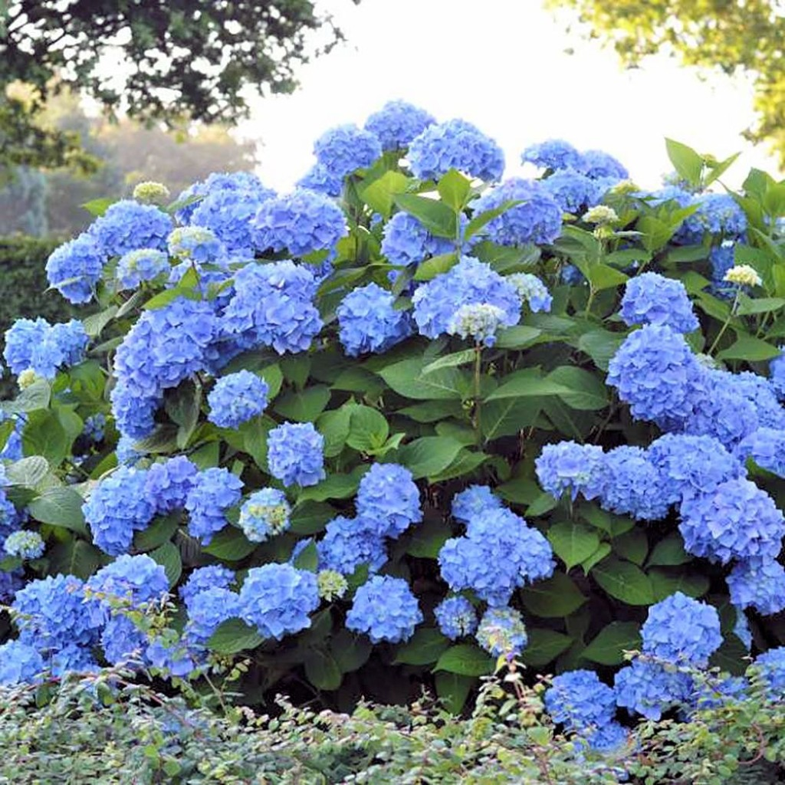
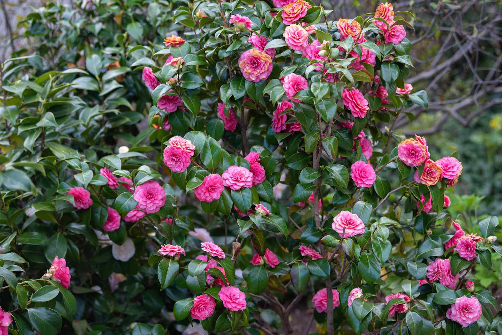

Plantas de exterior
Ceibo
El ceibo, también denominado seibo, seíbo o bucaré, es una especie característica de la formación denominada bosques en galería, originaria de América, especialmente de la Argentina (zona del Litoral), Uruguay, Brasil y Paraguay. Su nombre genérico es Erythrina, de origen griego (de la voz erythros que significa rojo). Su denominación específica es crista-galli, que en latín alude a la cresta del gallo, también por la semejanza de ésta con el color de las flores. Su altura oscila entre los 6 a 10 metros. De fuste tortuoso y poco desarrollado, su corteza es de color pardo grisáceo, muy gruesa y muy rugosa, con profundos surcos. Florece entre los meses de octubre hasta abril, en forma de inflorescencia arracimada.
Tóxica para mascotas, evitar su ingesta
Mimosa
De nombre científico Acacia baileyana, es uno de los árboles ornamentales más habituales de ver. Se trata en realidad de un arbusto, aunque puede llegar a alcanzar alturas de hasta 8 metros. Tiene hojas perennes de color gris verdoso, pero lo más llamativo de él son sus flores, de un brillante y llamativo color amarillo. Estas son de tamaño pequeño y aparecen en inflorescencias en forma de pompón esférico, muy bonitas y decorativas. Se desarrolla mejor en climas cálidos, tanto al sol como en semisombra.
Tóxica para mascotas, evitar su ingesta
Pata de vaca
También llamado árbol de las orquídeas, y de nombre científico Bauhinia variegata, se trata de un árbol de hoja caduca que puede alcanzar alturas de hasta 10 metros. Dado su tamaño moderado, es uno de los árboles ornamentales más populares en jardines pequeños. Tiene hojas largas dispuestas de forma alterna y sus flores, rosas o blancas, guardan gran parecido con las de las orquídeas.
Tóxica para mascotas, evitar su ingesta
Bonetero
De nombre científico Euonymus fortunei y llamado comúnmente bonetero. Es un arbusto que se caracteriza tanto por sus sencillos cuidados como por su llamativo multicolor. Se trata de un arbusto que en su entorno natural, el centro de Europa, crece hasta entre 3 y 6 metros de altura. Es de hoja caduca y resiste bien tanto el frío como las altas temperaturas, prefiriendo siempre la sombra. Además resulta poco peligroso para el jardín pues ni su tronco se hace muy grueso, ni sus raíces tienen fuerza como para romper tuberías o causar daños en el suelo. Sus pequeños frutos rojos son muy bonitos, pero no deben nunca ingerirse.
Tóxica para mascotas, evitar su ingesta
Hortensia
Pocos arbustos con flores hay más conocidos que la hortensia. La Hydrangea macrophylla es una planta arbustiva originaria de Japón, que llega a los 3 metros de altura,. Tiene un gran éxito como planta ornamental debido a sus preciosas flores, que en algunos casos pueden llegar a cubrir casi la totalidad de la planta en época de floración. Son plantas acidófilas, que necesitan de suelos ácidos para no sufrir clorosis férrica. Puede ubicarse en zonas de sombra sin ningún problema para su crecimiento.
Tóxica para mascotas, evitar su ingesta
Camelia
Pertenece a la familia Teaceae, la camelia o Camellia japonica es un arbusto de hoja perenne que puede florecer desde otoño a primavera. Sus flores solitarias y con una amplia gama de colores que van desde al blanco al rojo, incluyendo bicolores, son muy llamativas ya que, aun cuando se desprenden del tallo, permanecen intactas varios días. Prefiere los ambientes húmedos y la semisombra.